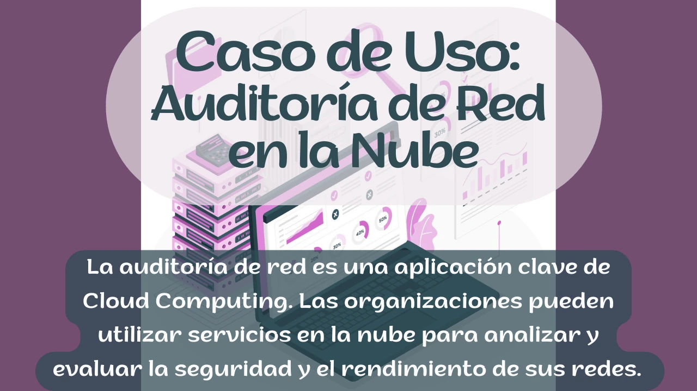

Computación en la nube
Cloud Computing: Un Vistazo Profundo a la Auditoría de Red en la Nube
En la era digital, el Cloud Computing, o Computación en la Nube, ha emergido como un pilar fundamental de la tecnología de la información. Esta tecnología revolucionaria ha transformado la forma en que las organizaciones gestionan sus recursos informáticos, ofreciendo flexibilidad, escalabilidad y eficiencia inigualables. En este artículo, exploraremos los conceptos clave detrás del Cloud Computing, su funcionamiento, configuración y cómo se aplica en un caso práctico: la auditoría de red.
El Cloud Computing se refiere a la entrega de servicios informáticos, como servidores, almacenamiento, bases de datos, redes, análisis y más, a través de Internet. En lugar de poseer y mantener servidores y centros de datos físicos, las organizaciones pueden acceder a estos recursos a través de proveedores de servicios en la nube, como Amazon Web Services (AWS), Google Cloud Platform (GCP) o Microsoft Azure. Esto permite una mayor agilidad empresarial, reducción de costos y una implementación más rápida de soluciones tecnológicas.
La configuración de un entorno en la nube implica la selección de servicios apropiados, la asignación de recursos y la implementación de medidas de seguridad. Los proveedores de nube ofrecen paneles de control intuitivos para gestionar recursos, crear redes virtuales y configurar instancias de máquinas virtuales según las necesidades de una organización.
Se divide en tres modelos de servicio principales
- IaaS (Infrastructure as a Service): Proporciona acceso a infraestructura de TI virtualizada, como máquinas virtuales y almacenamiento en la nube.
- PaaS (Platform as a Service): Ofrece una plataforma de desarrollo completa para crear, probar y alojar aplicaciones.
- SaaS (Software as a Service): Proporciona aplicaciones de software a través de Internet bajo demanda, como correo electrónico y aplicaciones de colaboración.
Se pueden desplegar en diferentes entornos:
- Nube pública: Recursos compartidos en la nube ofrecidos por proveedores externos.
- Nube privada: Infraestructura de nube utilizada exclusivamente por una organización.
- Nube híbrida: Combinación de nubes públicas y privadas para mayor flexibilidad.

- Utilizar servicios de escaneo de seguridad en la nube para identificar vulnerabilidades en la red.
- Implementar pruebas de penetración controladas para evaluar la resistencia de la red a ataques.
- Evaluar políticas de seguridad en la nube y verificar su cumplimiento con las mejores prácticas.
- Utilizar la escalabilidad de la nube para realizar auditorías en redes de gran envergadura.
- Generar informes detallados con recomendaciones para mejorar la seguridad de la red.
- La auditoría de red en la nube es solo uno de los muchos casos de uso. Para las empresas modernas, comprender y aprovechar el poder del Cloud Computing es esencial para mantenerse competitivas y seguras en el mundo digital en constante evolución.